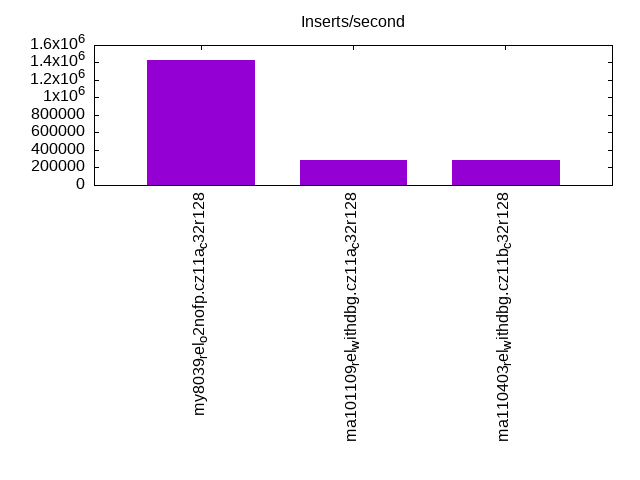
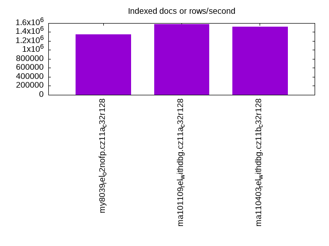
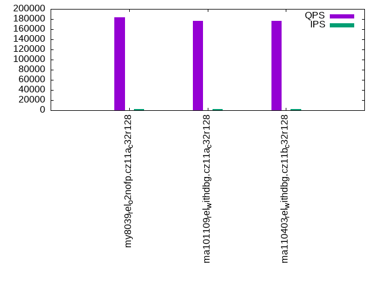
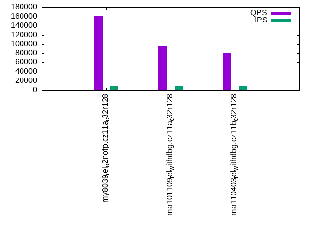
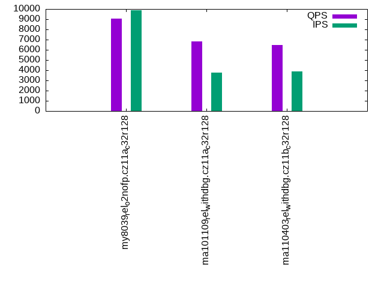
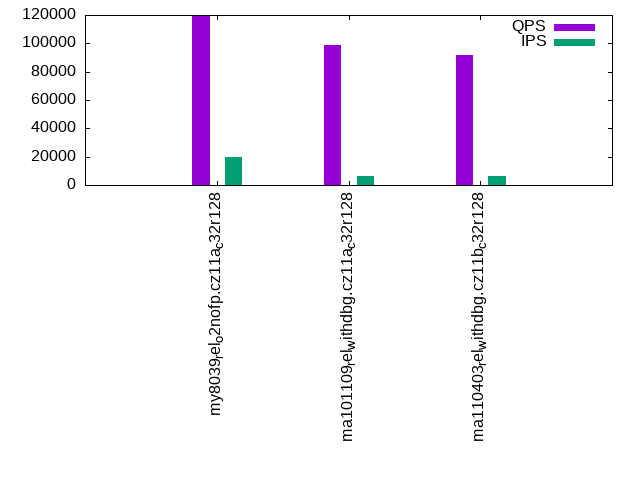

This is a report for the insert benchmark with 4000M docs and 20 client(s). It is generated by scripts (bash, awk, sed) and Tufte might not be impressed. An overview of the insert benchmark is here and a short update is here. Below, by DBMS, I mean DBMS+version.config. An example is my8020.c10b40 where my means MySQL, 8020 is version 8.0.20 and c10b40 is the name for the configuration file.
The test server is an ax162-s from Hetzner (see here) with 48 cores, AMD SMT disabled, 128G RAM and ext4 using 2 NVMe devices with SW RAID 1. The benchmark was run with 20 clients and there were 1 or 3 connections per client (1 for queries or inserts without rate limits, 1+1 for rate limited inserts+deletes). It uses 8 tables with a table per client. It loads 200M rows per table without secondary indexes, creates 3 secondary indexes per table, then inserts 4m+1m rows per table with a delete per insert to avoid growing the table. It then does 6 read+write tests for 1800s each that do queries as fast as possible with 100,100,500,500,1000,1000 inserts/s and the same for deletes/s per client concurrent with the queries. The database is larger than memory. Clients and the DBMS share one server.
The tested DBMS are:
The numbers are inserts/s for l.i0, l.i1 and l.i2, indexed docs (or rows) /s for l.x and queries/s for qr100, qp100 thru qr1000, qp1000" The values are the average rate over the entire test for inserts (IPS) and queries (QPS). The range of values for IPS and QPS is split into 3 parts: bottom 25%, middle 50%, top 25%. Values in the bottom 25% have a red background, values in the top 25% have a green background and values in the middle have no color. A gray background is used for values that can be ignored because the DBMS did not sustain the target insert rate. Red backgrounds are not used when the minimum value is within 80% of the max value.
| dbms | l.i0 | l.x | l.i1 | l.i2 | qr100 | qp100 | qr500 | qp500 | qr1000 | qp1000 |
|---|---|---|---|---|---|---|---|---|---|---|
| my8039_rel_o2nofp.cz11a_c32r128 | 1434206 | 1353180 | 16162 | 5682 | 183538 | 17203 | 160796 | 9033 | 119664 | 8645 |
| ma101109_rel_withdbg.cz11a_c32r128 | 281057 | 1573564 | 6122 | 6812 | 176381 | 17765 | 94824 | 6840 | 99044 | 5145 |
| ma110403_rel_withdbg.cz11b_c32r128 | 284698 | 1523229 | 6262 | 7613 | 177008 | 17688 | 80329 | 6488 | 91584 | 5399 |
This table has relative throughput, throughput for the DBMS relative to the DBMS in the first line, using the absolute throughput from the previous table. Values less than 0.95 have a yellow background. Values greater than 1.05 have a blue background.
| dbms | l.i0 | l.x | l.i1 | l.i2 | qr100 | qp100 | qr500 | qp500 | qr1000 | qp1000 |
|---|---|---|---|---|---|---|---|---|---|---|
| my8039_rel_o2nofp.cz11a_c32r128 | 1.00 | 1.00 | 1.00 | 1.00 | 1.00 | 1.00 | 1.00 | 1.00 | 1.00 | 1.00 |
| ma101109_rel_withdbg.cz11a_c32r128 | 0.20 | 1.16 | 0.38 | 1.20 | 0.96 | 1.03 | 0.59 | 0.76 | 0.83 | 0.60 |
| ma110403_rel_withdbg.cz11b_c32r128 | 0.20 | 1.13 | 0.39 | 1.34 | 0.96 | 1.03 | 0.50 | 0.72 | 0.77 | 0.62 |
This lists the average rate of inserts/s for the tests that do inserts concurrent with queries. For such tests the query rate is listed in the table above. The read+write tests are setup so that the insert rate should match the target rate every second. Cells that are not at least 95% of the target have a red background to indicate a failure to satisfy the target.
| dbms | qr100.L1 | qp100.L2 | qr500.L3 | qp500.L4 | qr1000.L5 | qp1000.L6 |
|---|---|---|---|---|---|---|
| my8039_rel_o2nofp.cz11a_c32r128 | 1977 | 1977 | 9885 | 9885 | 19769 | 12609 |
| ma101109_rel_withdbg.cz11a_c32r128 | 1976 | 1976 | 8411 | 3771 | 6235 | 4249 |
| ma110403_rel_withdbg.cz11b_c32r128 | 1976 | 1976 | 8459 | 3909 | 6319 | 4254 |
| target | 2000 | 2000 | 10000 | 10000 | 20000 | 20000 |
l.i0: load without secondary indexes. Graphs for performance per 1-second interval are here.
Average throughput:
Insert response time histogram: each cell has the percentage of responses that take <= the time in the header and max is the max response time in seconds. For the max column values in the top 25% of the range have a red background and in the bottom 25% of the range have a green background. The red background is not used when the min value is within 80% of the max value.
| dbms | 256us | 1ms | 4ms | 16ms | 64ms | 256ms | 1s | 4s | 16s | gt | max |
|---|---|---|---|---|---|---|---|---|---|---|---|
| my8039_rel_o2nofp.cz11a_c32r128 | 0.086 | 99.802 | 0.060 | 0.014 | 0.038 | 0.228 | |||||
| ma101109_rel_withdbg.cz11a_c32r128 | 0.074 | 0.255 | 99.427 | 0.043 | 0.108 | 0.094 | 0.666 | ||||
| ma110403_rel_withdbg.cz11b_c32r128 | 0.066 | 0.263 | 99.421 | 0.051 | 0.106 | 0.094 | 0.677 |
Performance metrics for the DBMS listed above. Some are normalized by throughput, others are not. Legend for results is here.
ips qps rps rmbps wps wmbps rpq rkbpq wpi wkbpi csps cpups cspq cpupq dbgb1 dbgb2 rss maxop p50 p99 tag 1434206 0 4 0.0 9732.3 532.7 0.000 0.000 0.007 0.380 295453 55.2 0.206 18 262.3 362.8 108.6 0.228 74720 62333 my8039_rel_o2nofp.cz11a_c32r128 281057 0 2614 10.2 1995.5 84.6 0.009 0.037 0.007 0.308 251834 50.5 0.896 86 263.2 365.2 101.4 0.666 14684 200 ma101109_rel_withdbg.cz11a_c32r128 284698 0 2649 10.4 2030.6 85.8 0.009 0.037 0.007 0.309 256608 50.4 0.901 85 263.2 365.2 101.4 0.677 14884 200 ma110403_rel_withdbg.cz11b_c32r128
l.x: create secondary indexes.
Average throughput:
Performance metrics for the DBMS listed above. Some are normalized by throughput, others are not. Legend for results is here.
ips qps rps rmbps wps wmbps rpq rkbpq wpi wkbpi csps cpups cspq cpupq dbgb1 dbgb2 rss maxop p50 p99 tag 1353180 0 34149 1971.3 40424.4 1776.7 0.025 1.492 0.030 1.344 193770 57.0 0.143 20 603.6 704.2 104.9 0.017 NA NA my8039_rel_o2nofp.cz11a_c32r128 1573564 0 17191 1407.8 18209.2 1551.0 0.011 0.916 0.012 1.009 78106 23.7 0.050 7 557.5 659.5 101.8 0.002 NA NA ma101109_rel_withdbg.cz11a_c32r128 1523229 0 16614 1355.4 19282.1 1511.1 0.011 0.911 0.013 1.016 83878 24.2 0.055 8 557.5 659.5 101.8 0.002 NA NA ma110403_rel_withdbg.cz11b_c32r128
l.i1: continue load after secondary indexes created with 50 inserts per transaction. Graphs for performance per 1-second interval are here.
Average throughput:
Insert response time histogram: each cell has the percentage of responses that take <= the time in the header and max is the max response time in seconds. For the max column values in the top 25% of the range have a red background and in the bottom 25% of the range have a green background. The red background is not used when the min value is within 80% of the max value.
| dbms | 256us | 1ms | 4ms | 16ms | 64ms | 256ms | 1s | 4s | 16s | gt | max |
|---|---|---|---|---|---|---|---|---|---|---|---|
| my8039_rel_o2nofp.cz11a_c32r128 | 0.105 | 14.232 | 38.037 | 47.286 | 0.340 | 0.499 | |||||
| ma101109_rel_withdbg.cz11a_c32r128 | 1.204 | 16.009 | 57.842 | 24.942 | 0.001 | 0.001 | 0.002 | 128.400 | |||
| ma110403_rel_withdbg.cz11b_c32r128 | 1.917 | 15.311 | 57.804 | 24.950 | 0.008 | 0.005 | 0.005 | 104.927 |
Delete response time histogram: each cell has the percentage of responses that take <= the time in the header and max is the max response time in seconds. For the max column values in the top 25% of the range have a red background and in the bottom 25% of the range have a green background. The red background is not used when the min value is within 80% of the max value.
| dbms | 256us | 1ms | 4ms | 16ms | 64ms | 256ms | 1s | 4s | 16s | gt | max |
|---|---|---|---|---|---|---|---|---|---|---|---|
| my8039_rel_o2nofp.cz11a_c32r128 | 18.776 | 19.593 | 29.076 | 32.556 | 0.194 | ||||||
| ma101109_rel_withdbg.cz11a_c32r128 | 9.959 | 24.433 | 43.130 | 22.475 | 0.001 | 0.001 | 0.002 | 87.473 | |||
| ma110403_rel_withdbg.cz11b_c32r128 | 10.032 | 19.980 | 45.904 | 24.073 | 0.006 | 0.003 | 0.002 | 102.879 |
Performance metrics for the DBMS listed above. Some are normalized by throughput, others are not. Legend for results is here.
ips qps rps rmbps wps wmbps rpq rkbpq wpi wkbpi csps cpups cspq cpupq dbgb1 dbgb2 rss maxop p50 p99 tag 16162 0 36368 568.3 53216.8 1514.8 2.250 36.005 3.293 95.980 333511 20.7 20.636 615 818.4 935.0 107.6 0.499 699 300 my8039_rel_o2nofp.cz11a_c32r128 6122 0 36608 568.0 35668.6 973.6 5.980 95.006 5.826 162.858 862195 14.3 140.840 1121 723.7 826.3 100.5 128.400 300 0 ma101109_rel_withdbg.cz11a_c32r128 6262 0 38408 596.0 37589.9 1007.8 6.133 97.454 6.003 164.789 868728 13.6 138.726 1042 725.0 827.7 100.5 104.927 300 0 ma110403_rel_withdbg.cz11b_c32r128
l.i2: continue load after secondary indexes created with 5 inserts per transaction. Graphs for performance per 1-second interval are here.
Average throughput:
Insert response time histogram: each cell has the percentage of responses that take <= the time in the header and max is the max response time in seconds. For the max column values in the top 25% of the range have a red background and in the bottom 25% of the range have a green background. The red background is not used when the min value is within 80% of the max value.
| dbms | 256us | 1ms | 4ms | 16ms | 64ms | 256ms | 1s | 4s | 16s | gt | max |
|---|---|---|---|---|---|---|---|---|---|---|---|
| my8039_rel_o2nofp.cz11a_c32r128 | 0.083 | 72.400 | 27.311 | 0.206 | 0.167 | ||||||
| ma101109_rel_withdbg.cz11a_c32r128 | 0.012 | 6.985 | 70.904 | 20.664 | 1.413 | 0.021 | 0.001 | 2.729 | |||
| ma110403_rel_withdbg.cz11b_c32r128 | 0.031 | 15.909 | 60.032 | 23.806 | 0.214 | 0.006 | nonzero | nonzero | 4.100 |
Delete response time histogram: each cell has the percentage of responses that take <= the time in the header and max is the max response time in seconds. For the max column values in the top 25% of the range have a red background and in the bottom 25% of the range have a green background. The red background is not used when the min value is within 80% of the max value.
| dbms | 256us | 1ms | 4ms | 16ms | 64ms | 256ms | 1s | 4s | 16s | gt | max |
|---|---|---|---|---|---|---|---|---|---|---|---|
| my8039_rel_o2nofp.cz11a_c32r128 | 0.260 | 73.200 | 26.459 | 0.080 | 0.167 | ||||||
| ma101109_rel_withdbg.cz11a_c32r128 | nonzero | 0.072 | 17.629 | 66.997 | 14.044 | 1.252 | 0.005 | nonzero | 2.727 | ||
| ma110403_rel_withdbg.cz11b_c32r128 | 0.086 | 25.395 | 54.241 | 20.077 | 0.197 | 0.004 | nonzero | nonzero | 4.100 |
Performance metrics for the DBMS listed above. Some are normalized by throughput, others are not. Legend for results is here.
ips qps rps rmbps wps wmbps rpq rkbpq wpi wkbpi csps cpups cspq cpupq dbgb1 dbgb2 rss maxop p50 p99 tag 5682 0 38736 605.3 50136.5 1439.4 6.818 109.082 8.824 259.410 335921 17.3 59.122 1462 818.4 932.1 106.0 0.167 140 80 my8039_rel_o2nofp.cz11a_c32r128 6812 0 38701 586.1 31995.9 891.4 5.681 88.108 4.697 134.004 902625 15.7 132.507 1106 723.7 826.3 100.5 2.729 445 65 ma101109_rel_withdbg.cz11a_c32r128 7613 0 40314 608.8 33481.0 935.0 5.295 81.892 4.398 125.764 996146 16.3 130.845 1028 725.0 827.7 100.5 4.100 469 85 ma110403_rel_withdbg.cz11b_c32r128
qr100.L1: range queries with 100 insert/s per client. Graphs for performance per 1-second interval are here.
Average throughput:
Query response time histogram: each cell has the percentage of responses that take <= the time in the header and max is the max response time in seconds. For max values in the top 25% of the range have a red background and in the bottom 25% of the range have a green background. The red background is not used when the min value is within 80% of the max value.
| dbms | 256us | 1ms | 4ms | 16ms | 64ms | 256ms | 1s | 4s | 16s | gt | max |
|---|---|---|---|---|---|---|---|---|---|---|---|
| my8039_rel_o2nofp.cz11a_c32r128 | 99.889 | 0.107 | 0.003 | nonzero | 0.013 | ||||||
| ma101109_rel_withdbg.cz11a_c32r128 | 99.633 | 0.330 | 0.034 | 0.003 | nonzero | 0.027 | |||||
| ma110403_rel_withdbg.cz11b_c32r128 | 99.584 | 0.375 | 0.039 | 0.002 | nonzero | nonzero | 0.154 |
Insert response time histogram: each cell has the percentage of responses that take <= the time in the header and max is the max response time in seconds. For max values in the top 25% of the range have a red background and in the bottom 25% of the range have a green background. The red background is not used when the min value is within 80% of the max value.
| dbms | 256us | 1ms | 4ms | 16ms | 64ms | 256ms | 1s | 4s | 16s | gt | max |
|---|---|---|---|---|---|---|---|---|---|---|---|
| my8039_rel_o2nofp.cz11a_c32r128 | 95.174 | 4.826 | 0.037 | ||||||||
| ma101109_rel_withdbg.cz11a_c32r128 | 34.196 | 65.803 | 0.001 | 0.065 | |||||||
| ma110403_rel_withdbg.cz11b_c32r128 | 33.228 | 66.319 | 0.453 | 0.198 |
Delete response time histogram: each cell has the percentage of responses that take <= the time in the header and max is the max response time in seconds. For max values in the top 25% of the range have a red background and in the bottom 25% of the range have a green background. The red background is not used when the min value is within 80% of the max value.
| dbms | 256us | 1ms | 4ms | 16ms | 64ms | 256ms | 1s | 4s | 16s | gt | max |
|---|---|---|---|---|---|---|---|---|---|---|---|
| my8039_rel_o2nofp.cz11a_c32r128 | 91.606 | 8.394 | 0.013 | ||||||||
| ma101109_rel_withdbg.cz11a_c32r128 | 73.415 | 26.585 | 0.055 | ||||||||
| ma110403_rel_withdbg.cz11b_c32r128 | 68.756 | 31.104 | 0.140 | 0.193 |
Performance metrics for the DBMS listed above. Some are normalized by throughput, others are not. Legend for results is here.
ips qps rps rmbps wps wmbps rpq rkbpq wpi wkbpi csps cpups cspq cpupq dbgb1 dbgb2 rss maxop p50 p99 tag 1977 183538 8290 129.5 9300.2 267.9 0.045 0.723 4.704 138.770 746909 45.3 4.070 118 818.4 932.1 106.0 0.013 9366 8711 my8039_rel_o2nofp.cz11a_c32r128 1976 176381 9250 143.4 5991.3 168.0 0.052 0.833 3.032 87.084 733626 44.2 4.159 120 723.7 826.3 100.4 0.027 8950 7419 ma101109_rel_withdbg.cz11a_c32r128 1976 177008 9276 143.7 5988.0 168.4 0.052 0.832 3.031 87.268 738233 44.2 4.171 120 725.0 827.7 100.4 0.154 9017 7544 ma110403_rel_withdbg.cz11b_c32r128
qp100.L2: point queries with 100 insert/s per client. Graphs for performance per 1-second interval are here.
Average throughput:
Query response time histogram: each cell has the percentage of responses that take <= the time in the header and max is the max response time in seconds. For max values in the top 25% of the range have a red background and in the bottom 25% of the range have a green background. The red background is not used when the min value is within 80% of the max value.
| dbms | 256us | 1ms | 4ms | 16ms | 64ms | 256ms | 1s | 4s | 16s | gt | max |
|---|---|---|---|---|---|---|---|---|---|---|---|
| my8039_rel_o2nofp.cz11a_c32r128 | 0.003 | 51.040 | 48.122 | 0.836 | nonzero | 0.017 | |||||
| ma101109_rel_withdbg.cz11a_c32r128 | 0.005 | 55.347 | 44.153 | 0.433 | 0.060 | 0.002 | 0.251 | ||||
| ma110403_rel_withdbg.cz11b_c32r128 | 0.006 | 55.848 | 43.607 | 0.470 | 0.066 | 0.003 | nonzero | 0.301 |
Insert response time histogram: each cell has the percentage of responses that take <= the time in the header and max is the max response time in seconds. For max values in the top 25% of the range have a red background and in the bottom 25% of the range have a green background. The red background is not used when the min value is within 80% of the max value.
| dbms | 256us | 1ms | 4ms | 16ms | 64ms | 256ms | 1s | 4s | 16s | gt | max |
|---|---|---|---|---|---|---|---|---|---|---|---|
| my8039_rel_o2nofp.cz11a_c32r128 | 42.807 | 57.165 | 0.028 | 0.084 | |||||||
| ma101109_rel_withdbg.cz11a_c32r128 | 0.207 | 87.782 | 11.378 | 0.633 | 0.401 | ||||||
| ma110403_rel_withdbg.cz11b_c32r128 | 0.239 | 88.954 | 10.310 | 0.497 | 0.437 |
Delete response time histogram: each cell has the percentage of responses that take <= the time in the header and max is the max response time in seconds. For max values in the top 25% of the range have a red background and in the bottom 25% of the range have a green background. The red background is not used when the min value is within 80% of the max value.
| dbms | 256us | 1ms | 4ms | 16ms | 64ms | 256ms | 1s | 4s | 16s | gt | max |
|---|---|---|---|---|---|---|---|---|---|---|---|
| my8039_rel_o2nofp.cz11a_c32r128 | 82.588 | 17.413 | 0.013 | ||||||||
| ma101109_rel_withdbg.cz11a_c32r128 | 0.335 | 90.314 | 9.286 | 0.065 | 0.336 | ||||||
| ma110403_rel_withdbg.cz11b_c32r128 | 0.369 | 90.604 | 8.872 | 0.154 | 0.437 |
Performance metrics for the DBMS listed above. Some are normalized by throughput, others are not. Legend for results is here.
ips qps rps rmbps wps wmbps rpq rkbpq wpi wkbpi csps cpups cspq cpupq dbgb1 dbgb2 rss maxop p50 p99 tag 1977 17203 126426 1975.4 17480.6 490.4 7.349 117.583 8.842 254.000 373425 16.7 21.707 466 818.4 932.1 106.1 0.017 911 368 my8039_rel_o2nofp.cz11a_c32r128 1976 17765 130543 2038.6 12551.9 345.3 7.348 117.507 6.353 178.982 519686 15.8 29.254 427 723.7 826.3 100.4 0.251 943 192 ma101109_rel_withdbg.cz11a_c32r128 1976 17688 129650 2024.7 12430.2 343.0 7.330 117.209 6.291 177.771 515228 15.6 29.128 423 725.0 827.7 100.4 0.301 943 176 ma110403_rel_withdbg.cz11b_c32r128
qr500.L3: range queries with 500 insert/s per client. Graphs for performance per 1-second interval are here.
Average throughput:
Query response time histogram: each cell has the percentage of responses that take <= the time in the header and max is the max response time in seconds. For max values in the top 25% of the range have a red background and in the bottom 25% of the range have a green background. The red background is not used when the min value is within 80% of the max value.
| dbms | 256us | 1ms | 4ms | 16ms | 64ms | 256ms | 1s | 4s | 16s | gt | max |
|---|---|---|---|---|---|---|---|---|---|---|---|
| my8039_rel_o2nofp.cz11a_c32r128 | 99.284 | 0.687 | 0.027 | 0.002 | nonzero | 0.031 | |||||
| ma101109_rel_withdbg.cz11a_c32r128 | 93.258 | 5.400 | 1.117 | 0.158 | 0.060 | 0.006 | 0.001 | 0.385 | |||
| ma110403_rel_withdbg.cz11b_c32r128 | 92.517 | 5.871 | 1.189 | 0.269 | 0.145 | 0.008 | nonzero | 0.410 |
Insert response time histogram: each cell has the percentage of responses that take <= the time in the header and max is the max response time in seconds. For max values in the top 25% of the range have a red background and in the bottom 25% of the range have a green background. The red background is not used when the min value is within 80% of the max value.
| dbms | 256us | 1ms | 4ms | 16ms | 64ms | 256ms | 1s | 4s | 16s | gt | max |
|---|---|---|---|---|---|---|---|---|---|---|---|
| my8039_rel_o2nofp.cz11a_c32r128 | 16.750 | 82.219 | 1.031 | 0.117 | |||||||
| ma101109_rel_withdbg.cz11a_c32r128 | 6.011 | 51.984 | 25.444 | 16.561 | 0.979 | ||||||
| ma110403_rel_withdbg.cz11b_c32r128 | 7.521 | 44.047 | 35.467 | 12.964 | 0.973 |
Delete response time histogram: each cell has the percentage of responses that take <= the time in the header and max is the max response time in seconds. For max values in the top 25% of the range have a red background and in the bottom 25% of the range have a green background. The red background is not used when the min value is within 80% of the max value.
| dbms | 256us | 1ms | 4ms | 16ms | 64ms | 256ms | 1s | 4s | 16s | gt | max |
|---|---|---|---|---|---|---|---|---|---|---|---|
| my8039_rel_o2nofp.cz11a_c32r128 | 42.736 | 56.812 | 0.452 | 0.049 | |||||||
| ma101109_rel_withdbg.cz11a_c32r128 | 24.117 | 39.489 | 22.092 | 14.301 | 0.949 | ||||||
| ma110403_rel_withdbg.cz11b_c32r128 | 17.323 | 39.464 | 31.558 | 11.654 | 0.970 |
Performance metrics for the DBMS listed above. Some are normalized by throughput, others are not. Legend for results is here.
ips qps rps rmbps wps wmbps rpq rkbpq wpi wkbpi csps cpups cspq cpupq dbgb1 dbgb2 rss maxop p50 p99 tag 9885 160796 37394 584.3 45903.2 1278.1 0.233 3.721 4.644 132.408 814123 54.9 5.063 164 818.4 932.1 106.1 0.031 8135 7163 my8039_rel_o2nofp.cz11a_c32r128 8411 94824 35558 550.5 34632.1 955.3 0.375 5.945 4.117 116.300 1061765 41.6 11.197 211 724.0 826.6 100.6 0.385 4715 2573 ma101109_rel_withdbg.cz11a_c32r128 8459 80329 34911 540.7 32875.5 909.2 0.435 6.893 3.887 110.068 1098327 37.5 13.673 224 725.3 828.0 100.6 0.410 3773 1711 ma110403_rel_withdbg.cz11b_c32r128
qp500.L4: point queries with 500 insert/s per client. Graphs for performance per 1-second interval are here.
Average throughput:
Query response time histogram: each cell has the percentage of responses that take <= the time in the header and max is the max response time in seconds. For max values in the top 25% of the range have a red background and in the bottom 25% of the range have a green background. The red background is not used when the min value is within 80% of the max value.
| dbms | 256us | 1ms | 4ms | 16ms | 64ms | 256ms | 1s | 4s | 16s | gt | max |
|---|---|---|---|---|---|---|---|---|---|---|---|
| my8039_rel_o2nofp.cz11a_c32r128 | nonzero | 7.351 | 83.312 | 9.326 | 0.011 | 0.026 | |||||
| ma101109_rel_withdbg.cz11a_c32r128 | nonzero | 8.197 | 77.844 | 11.671 | 2.276 | 0.008 | 0.004 | 0.350 | |||
| ma110403_rel_withdbg.cz11b_c32r128 | nonzero | 8.275 | 75.885 | 13.488 | 2.335 | 0.011 | 0.005 | 0.364 |
Insert response time histogram: each cell has the percentage of responses that take <= the time in the header and max is the max response time in seconds. For max values in the top 25% of the range have a red background and in the bottom 25% of the range have a green background. The red background is not used when the min value is within 80% of the max value.
| dbms | 256us | 1ms | 4ms | 16ms | 64ms | 256ms | 1s | 4s | 16s | gt | max |
|---|---|---|---|---|---|---|---|---|---|---|---|
| my8039_rel_o2nofp.cz11a_c32r128 | 12.871 | 86.998 | 0.131 | 0.135 | |||||||
| ma101109_rel_withdbg.cz11a_c32r128 | 0.004 | 11.724 | 20.341 | 67.931 | 0.793 | ||||||
| ma110403_rel_withdbg.cz11b_c32r128 | 0.017 | 14.397 | 21.066 | 64.520 | 0.872 |
Delete response time histogram: each cell has the percentage of responses that take <= the time in the header and max is the max response time in seconds. For max values in the top 25% of the range have a red background and in the bottom 25% of the range have a green background. The red background is not used when the min value is within 80% of the max value.
| dbms | 256us | 1ms | 4ms | 16ms | 64ms | 256ms | 1s | 4s | 16s | gt | max |
|---|---|---|---|---|---|---|---|---|---|---|---|
| my8039_rel_o2nofp.cz11a_c32r128 | 28.848 | 70.028 | 1.124 | 0.050 | |||||||
| ma101109_rel_withdbg.cz11a_c32r128 | 0.049 | 12.999 | 25.152 | 61.800 | 0.718 | ||||||
| ma110403_rel_withdbg.cz11b_c32r128 | 0.053 | 15.607 | 22.188 | 62.152 | 0.728 |
Performance metrics for the DBMS listed above. Some are normalized by throughput, others are not. Legend for results is here.
ips qps rps rmbps wps wmbps rpq rkbpq wpi wkbpi csps cpups cspq cpupq dbgb1 dbgb2 rss maxop p50 p99 tag 9885 9033 108421 1694.1 47732.9 1328.5 12.003 192.052 4.829 137.630 426771 22.5 47.247 1196 818.4 932.1 106.0 0.026 463 240 my8039_rel_o2nofp.cz11a_c32r128 3771 6840 85557 1334.7 28539.1 789.8 12.508 199.817 7.568 214.463 1097140 19.3 160.401 1354 724.1 826.8 100.6 0.350 368 48 ma101109_rel_withdbg.cz11a_c32r128 3909 6488 82583 1288.1 29008.2 804.7 12.729 203.319 7.421 210.803 1098779 19.0 169.366 1406 725.3 828.0 100.6 0.364 336 64 ma110403_rel_withdbg.cz11b_c32r128
qr1000.L5: range queries with 1000 insert/s per client. Graphs for performance per 1-second interval are here.
Average throughput:
Query response time histogram: each cell has the percentage of responses that take <= the time in the header and max is the max response time in seconds. For max values in the top 25% of the range have a red background and in the bottom 25% of the range have a green background. The red background is not used when the min value is within 80% of the max value.
| dbms | 256us | 1ms | 4ms | 16ms | 64ms | 256ms | 1s | 4s | 16s | gt | max |
|---|---|---|---|---|---|---|---|---|---|---|---|
| my8039_rel_o2nofp.cz11a_c32r128 | 95.984 | 3.116 | 0.887 | 0.013 | nonzero | 0.029 | |||||
| ma101109_rel_withdbg.cz11a_c32r128 | 92.743 | 5.583 | 1.432 | 0.218 | 0.022 | 0.002 | nonzero | 0.357 | |||
| ma110403_rel_withdbg.cz11b_c32r128 | 92.534 | 5.753 | 1.343 | 0.310 | 0.058 | 0.002 | nonzero | 0.365 |
Insert response time histogram: each cell has the percentage of responses that take <= the time in the header and max is the max response time in seconds. For max values in the top 25% of the range have a red background and in the bottom 25% of the range have a green background. The red background is not used when the min value is within 80% of the max value.
| dbms | 256us | 1ms | 4ms | 16ms | 64ms | 256ms | 1s | 4s | 16s | gt | max |
|---|---|---|---|---|---|---|---|---|---|---|---|
| my8039_rel_o2nofp.cz11a_c32r128 | nonzero | 35.224 | 64.740 | 0.036 | 0.099 | ||||||
| ma101109_rel_withdbg.cz11a_c32r128 | 0.893 | 16.800 | 55.613 | 26.694 | 0.949 | ||||||
| ma110403_rel_withdbg.cz11b_c32r128 | 1.339 | 17.440 | 54.362 | 26.859 | 0.847 |
Delete response time histogram: each cell has the percentage of responses that take <= the time in the header and max is the max response time in seconds. For max values in the top 25% of the range have a red background and in the bottom 25% of the range have a green background. The red background is not used when the min value is within 80% of the max value.
| dbms | 256us | 1ms | 4ms | 16ms | 64ms | 256ms | 1s | 4s | 16s | gt | max |
|---|---|---|---|---|---|---|---|---|---|---|---|
| my8039_rel_o2nofp.cz11a_c32r128 | 27.508 | 69.473 | 3.019 | 0.053 | |||||||
| ma101109_rel_withdbg.cz11a_c32r128 | 10.273 | 16.492 | 48.571 | 24.664 | 0.919 | ||||||
| ma110403_rel_withdbg.cz11b_c32r128 | 7.570 | 17.881 | 48.543 | 26.006 | 0.841 |
Performance metrics for the DBMS listed above. Some are normalized by throughput, others are not. Legend for results is here.
ips qps rps rmbps wps wmbps rpq rkbpq wpi wkbpi csps cpups cspq cpupq dbgb1 dbgb2 rss maxop p50 p99 tag 19769 119664 36933 577.1 48339.8 1389.8 0.309 4.938 2.445 71.989 678256 59.3 5.668 238 818.4 932.9 106.0 0.029 5929 5114 my8039_rel_o2nofp.cz11a_c32r128 6235 99044 34701 538.7 33275.5 921.0 0.350 5.570 5.337 151.270 1094931 43.9 11.055 213 724.1 826.9 100.7 0.357 4555 2493 ma101109_rel_withdbg.cz11a_c32r128 6319 91584 35759 555.2 33619.7 934.0 0.390 6.208 5.320 151.347 1130405 41.7 12.343 219 725.3 828.1 100.7 0.365 4475 1998 ma110403_rel_withdbg.cz11b_c32r128
qp1000.L6: point queries with 1000 insert/s per client. Graphs for performance per 1-second interval are here.
Average throughput:
Query response time histogram: each cell has the percentage of responses that take <= the time in the header and max is the max response time in seconds. For max values in the top 25% of the range have a red background and in the bottom 25% of the range have a green background. The red background is not used when the min value is within 80% of the max value.
| dbms | 256us | 1ms | 4ms | 16ms | 64ms | 256ms | 1s | 4s | 16s | gt | max |
|---|---|---|---|---|---|---|---|---|---|---|---|
| my8039_rel_o2nofp.cz11a_c32r128 | nonzero | 4.860 | 85.374 | 9.750 | 0.015 | 0.061 | |||||
| ma101109_rel_withdbg.cz11a_c32r128 | nonzero | 6.758 | 73.157 | 15.276 | 4.777 | 0.031 | 0.003 | 0.348 | |||
| ma110403_rel_withdbg.cz11b_c32r128 | nonzero | 7.569 | 72.449 | 16.155 | 3.794 | 0.029 | 0.004 | 0.365 |
Insert response time histogram: each cell has the percentage of responses that take <= the time in the header and max is the max response time in seconds. For max values in the top 25% of the range have a red background and in the bottom 25% of the range have a green background. The red background is not used when the min value is within 80% of the max value.
| dbms | 256us | 1ms | 4ms | 16ms | 64ms | 256ms | 1s | 4s | 16s | gt | max |
|---|---|---|---|---|---|---|---|---|---|---|---|
| my8039_rel_o2nofp.cz11a_c32r128 | nonzero | 7.312 | 29.467 | 63.220 | 0.001 | 0.265 | |||||
| ma101109_rel_withdbg.cz11a_c32r128 | 0.017 | 18.919 | 26.387 | 54.677 | 0.814 | ||||||
| ma110403_rel_withdbg.cz11b_c32r128 | 0.010 | 18.284 | 26.764 | 54.942 | 0.796 |
Delete response time histogram: each cell has the percentage of responses that take <= the time in the header and max is the max response time in seconds. For max values in the top 25% of the range have a red background and in the bottom 25% of the range have a green background. The red background is not used when the min value is within 80% of the max value.
| dbms | 256us | 1ms | 4ms | 16ms | 64ms | 256ms | 1s | 4s | 16s | gt | max |
|---|---|---|---|---|---|---|---|---|---|---|---|
| my8039_rel_o2nofp.cz11a_c32r128 | 2.437 | 19.883 | 21.146 | 56.534 | 0.254 | ||||||
| ma101109_rel_withdbg.cz11a_c32r128 | 0.080 | 20.470 | 31.576 | 47.875 | 0.806 | ||||||
| ma110403_rel_withdbg.cz11b_c32r128 | 0.044 | 19.524 | 27.865 | 52.567 | 0.751 |
Performance metrics for the DBMS listed above. Some are normalized by throughput, others are not. Legend for results is here.
ips qps rps rmbps wps wmbps rpq rkbpq wpi wkbpi csps cpups cspq cpupq dbgb1 dbgb2 rss maxop p50 p99 tag 12609 8645 106609 1665.8 47165.1 1337.3 12.331 197.304 3.740 108.604 464367 26.9 53.713 1494 818.4 934.5 106.0 0.061 448 240 my8039_rel_o2nofp.cz11a_c32r128 4249 5145 68951 1075.1 26209.6 724.2 13.403 213.993 6.168 174.533 1213545 19.4 235.887 1810 724.1 826.9 100.6 0.348 208 32 ma101109_rel_withdbg.cz11a_c32r128 4254 5399 72009 1122.9 27554.0 763.9 13.337 212.961 6.477 183.867 1177901 19.1 218.154 1698 725.4 828.2 100.6 0.365 224 48 ma110403_rel_withdbg.cz11b_c32r128
l.i0: load without secondary indexes
Performance metrics for all DBMS, not just the ones listed above. Some are normalized by throughput, others are not. Legend for results is here.
ips qps rps rmbps wps wmbps rpq rkbpq wpi wkbpi csps cpups cspq cpupq dbgb1 dbgb2 rss maxop p50 p99 tag 1434206 0 4 0.0 9732.3 532.7 0.000 0.000 0.007 0.380 295453 55.2 0.206 18 262.3 362.8 108.6 0.228 74720 62333 my8039_rel_o2nofp.cz11a_c32r128 281057 0 2614 10.2 1995.5 84.6 0.009 0.037 0.007 0.308 251834 50.5 0.896 86 263.2 365.2 101.4 0.666 14684 200 ma101109_rel_withdbg.cz11a_c32r128 284698 0 2649 10.4 2030.6 85.8 0.009 0.037 0.007 0.309 256608 50.4 0.901 85 263.2 365.2 101.4 0.677 14884 200 ma110403_rel_withdbg.cz11b_c32r128
l.x: create secondary indexes
Performance metrics for all DBMS, not just the ones listed above. Some are normalized by throughput, others are not. Legend for results is here.
ips qps rps rmbps wps wmbps rpq rkbpq wpi wkbpi csps cpups cspq cpupq dbgb1 dbgb2 rss maxop p50 p99 tag 1353180 0 34149 1971.3 40424.4 1776.7 0.025 1.492 0.030 1.344 193770 57.0 0.143 20 603.6 704.2 104.9 0.017 NA NA my8039_rel_o2nofp.cz11a_c32r128 1573564 0 17191 1407.8 18209.2 1551.0 0.011 0.916 0.012 1.009 78106 23.7 0.050 7 557.5 659.5 101.8 0.002 NA NA ma101109_rel_withdbg.cz11a_c32r128 1523229 0 16614 1355.4 19282.1 1511.1 0.011 0.911 0.013 1.016 83878 24.2 0.055 8 557.5 659.5 101.8 0.002 NA NA ma110403_rel_withdbg.cz11b_c32r128
l.i1: continue load after secondary indexes created with 50 inserts per transaction
Performance metrics for all DBMS, not just the ones listed above. Some are normalized by throughput, others are not. Legend for results is here.
ips qps rps rmbps wps wmbps rpq rkbpq wpi wkbpi csps cpups cspq cpupq dbgb1 dbgb2 rss maxop p50 p99 tag 16162 0 36368 568.3 53216.8 1514.8 2.250 36.005 3.293 95.980 333511 20.7 20.636 615 818.4 935.0 107.6 0.499 699 300 my8039_rel_o2nofp.cz11a_c32r128 6122 0 36608 568.0 35668.6 973.6 5.980 95.006 5.826 162.858 862195 14.3 140.840 1121 723.7 826.3 100.5 128.400 300 0 ma101109_rel_withdbg.cz11a_c32r128 6262 0 38408 596.0 37589.9 1007.8 6.133 97.454 6.003 164.789 868728 13.6 138.726 1042 725.0 827.7 100.5 104.927 300 0 ma110403_rel_withdbg.cz11b_c32r128
l.i2: continue load after secondary indexes created with 5 inserts per transaction
Performance metrics for all DBMS, not just the ones listed above. Some are normalized by throughput, others are not. Legend for results is here.
ips qps rps rmbps wps wmbps rpq rkbpq wpi wkbpi csps cpups cspq cpupq dbgb1 dbgb2 rss maxop p50 p99 tag 5682 0 38736 605.3 50136.5 1439.4 6.818 109.082 8.824 259.410 335921 17.3 59.122 1462 818.4 932.1 106.0 0.167 140 80 my8039_rel_o2nofp.cz11a_c32r128 6812 0 38701 586.1 31995.9 891.4 5.681 88.108 4.697 134.004 902625 15.7 132.507 1106 723.7 826.3 100.5 2.729 445 65 ma101109_rel_withdbg.cz11a_c32r128 7613 0 40314 608.8 33481.0 935.0 5.295 81.892 4.398 125.764 996146 16.3 130.845 1028 725.0 827.7 100.5 4.100 469 85 ma110403_rel_withdbg.cz11b_c32r128
qr100.L1: range queries with 100 insert/s per client
Performance metrics for all DBMS, not just the ones listed above. Some are normalized by throughput, others are not. Legend for results is here.
ips qps rps rmbps wps wmbps rpq rkbpq wpi wkbpi csps cpups cspq cpupq dbgb1 dbgb2 rss maxop p50 p99 tag 1977 183538 8290 129.5 9300.2 267.9 0.045 0.723 4.704 138.770 746909 45.3 4.070 118 818.4 932.1 106.0 0.013 9366 8711 my8039_rel_o2nofp.cz11a_c32r128 1976 176381 9250 143.4 5991.3 168.0 0.052 0.833 3.032 87.084 733626 44.2 4.159 120 723.7 826.3 100.4 0.027 8950 7419 ma101109_rel_withdbg.cz11a_c32r128 1976 177008 9276 143.7 5988.0 168.4 0.052 0.832 3.031 87.268 738233 44.2 4.171 120 725.0 827.7 100.4 0.154 9017 7544 ma110403_rel_withdbg.cz11b_c32r128
qp100.L2: point queries with 100 insert/s per client
Performance metrics for all DBMS, not just the ones listed above. Some are normalized by throughput, others are not. Legend for results is here.
ips qps rps rmbps wps wmbps rpq rkbpq wpi wkbpi csps cpups cspq cpupq dbgb1 dbgb2 rss maxop p50 p99 tag 1977 17203 126426 1975.4 17480.6 490.4 7.349 117.583 8.842 254.000 373425 16.7 21.707 466 818.4 932.1 106.1 0.017 911 368 my8039_rel_o2nofp.cz11a_c32r128 1976 17765 130543 2038.6 12551.9 345.3 7.348 117.507 6.353 178.982 519686 15.8 29.254 427 723.7 826.3 100.4 0.251 943 192 ma101109_rel_withdbg.cz11a_c32r128 1976 17688 129650 2024.7 12430.2 343.0 7.330 117.209 6.291 177.771 515228 15.6 29.128 423 725.0 827.7 100.4 0.301 943 176 ma110403_rel_withdbg.cz11b_c32r128
qr500.L3: range queries with 500 insert/s per client
Performance metrics for all DBMS, not just the ones listed above. Some are normalized by throughput, others are not. Legend for results is here.
ips qps rps rmbps wps wmbps rpq rkbpq wpi wkbpi csps cpups cspq cpupq dbgb1 dbgb2 rss maxop p50 p99 tag 9885 160796 37394 584.3 45903.2 1278.1 0.233 3.721 4.644 132.408 814123 54.9 5.063 164 818.4 932.1 106.1 0.031 8135 7163 my8039_rel_o2nofp.cz11a_c32r128 8411 94824 35558 550.5 34632.1 955.3 0.375 5.945 4.117 116.300 1061765 41.6 11.197 211 724.0 826.6 100.6 0.385 4715 2573 ma101109_rel_withdbg.cz11a_c32r128 8459 80329 34911 540.7 32875.5 909.2 0.435 6.893 3.887 110.068 1098327 37.5 13.673 224 725.3 828.0 100.6 0.410 3773 1711 ma110403_rel_withdbg.cz11b_c32r128
qp500.L4: point queries with 500 insert/s per client
Performance metrics for all DBMS, not just the ones listed above. Some are normalized by throughput, others are not. Legend for results is here.
ips qps rps rmbps wps wmbps rpq rkbpq wpi wkbpi csps cpups cspq cpupq dbgb1 dbgb2 rss maxop p50 p99 tag 9885 9033 108421 1694.1 47732.9 1328.5 12.003 192.052 4.829 137.630 426771 22.5 47.247 1196 818.4 932.1 106.0 0.026 463 240 my8039_rel_o2nofp.cz11a_c32r128 3771 6840 85557 1334.7 28539.1 789.8 12.508 199.817 7.568 214.463 1097140 19.3 160.401 1354 724.1 826.8 100.6 0.350 368 48 ma101109_rel_withdbg.cz11a_c32r128 3909 6488 82583 1288.1 29008.2 804.7 12.729 203.319 7.421 210.803 1098779 19.0 169.366 1406 725.3 828.0 100.6 0.364 336 64 ma110403_rel_withdbg.cz11b_c32r128
qr1000.L5: range queries with 1000 insert/s per client
Performance metrics for all DBMS, not just the ones listed above. Some are normalized by throughput, others are not. Legend for results is here.
ips qps rps rmbps wps wmbps rpq rkbpq wpi wkbpi csps cpups cspq cpupq dbgb1 dbgb2 rss maxop p50 p99 tag 19769 119664 36933 577.1 48339.8 1389.8 0.309 4.938 2.445 71.989 678256 59.3 5.668 238 818.4 932.9 106.0 0.029 5929 5114 my8039_rel_o2nofp.cz11a_c32r128 6235 99044 34701 538.7 33275.5 921.0 0.350 5.570 5.337 151.270 1094931 43.9 11.055 213 724.1 826.9 100.7 0.357 4555 2493 ma101109_rel_withdbg.cz11a_c32r128 6319 91584 35759 555.2 33619.7 934.0 0.390 6.208 5.320 151.347 1130405 41.7 12.343 219 725.3 828.1 100.7 0.365 4475 1998 ma110403_rel_withdbg.cz11b_c32r128
qp1000.L6: point queries with 1000 insert/s per client
Performance metrics for all DBMS, not just the ones listed above. Some are normalized by throughput, others are not. Legend for results is here.
ips qps rps rmbps wps wmbps rpq rkbpq wpi wkbpi csps cpups cspq cpupq dbgb1 dbgb2 rss maxop p50 p99 tag 12609 8645 106609 1665.8 47165.1 1337.3 12.331 197.304 3.740 108.604 464367 26.9 53.713 1494 818.4 934.5 106.0 0.061 448 240 my8039_rel_o2nofp.cz11a_c32r128 4249 5145 68951 1075.1 26209.6 724.2 13.403 213.993 6.168 174.533 1213545 19.4 235.887 1810 724.1 826.9 100.6 0.348 208 32 ma101109_rel_withdbg.cz11a_c32r128 4254 5399 72009 1122.9 27554.0 763.9 13.337 212.961 6.477 183.867 1177901 19.1 218.154 1698 725.4 828.2 100.6 0.365 224 48 ma110403_rel_withdbg.cz11b_c32r128
Insert response time histogram
256us 1ms 4ms 16ms 64ms 256ms 1s 4s 16s gt max tag 0.000 0.086 99.802 0.060 0.014 0.038 0.000 0.000 0.000 0.000 0.228 my8039_rel_o2nofp.cz11a_c32r128 0.000 0.074 0.255 99.427 0.043 0.108 0.094 0.000 0.000 0.000 0.666 ma101109_rel_withdbg.cz11a_c32r128 0.000 0.066 0.263 99.421 0.051 0.106 0.094 0.000 0.000 0.000 0.677 ma110403_rel_withdbg.cz11b_c32r128
TODO - determine whether there is data for create index response time
Insert response time histogram
256us 1ms 4ms 16ms 64ms 256ms 1s 4s 16s gt max tag 0.000 0.000 0.105 14.232 38.037 47.286 0.340 0.000 0.000 0.000 0.499 my8039_rel_o2nofp.cz11a_c32r128 0.000 0.000 0.000 1.204 16.009 57.842 24.942 0.001 0.001 0.002 128.400 ma101109_rel_withdbg.cz11a_c32r128 0.000 0.000 0.000 1.917 15.311 57.804 24.950 0.008 0.005 0.005 104.927 ma110403_rel_withdbg.cz11b_c32r128
Delete response time histogram
256us 1ms 4ms 16ms 64ms 256ms 1s 4s 16s gt max tag 0.000 0.000 18.776 19.593 29.076 32.556 0.000 0.000 0.000 0.000 0.194 my8039_rel_o2nofp.cz11a_c32r128 0.000 0.000 0.000 9.959 24.433 43.130 22.475 0.001 0.001 0.002 87.473 ma101109_rel_withdbg.cz11a_c32r128 0.000 0.000 0.000 10.032 19.980 45.904 24.073 0.006 0.003 0.002 102.879 ma110403_rel_withdbg.cz11b_c32r128
Insert response time histogram
256us 1ms 4ms 16ms 64ms 256ms 1s 4s 16s gt max tag 0.000 0.000 0.083 72.400 27.311 0.206 0.000 0.000 0.000 0.000 0.167 my8039_rel_o2nofp.cz11a_c32r128 0.000 0.012 6.985 70.904 20.664 1.413 0.021 0.001 0.000 0.000 2.729 ma101109_rel_withdbg.cz11a_c32r128 0.000 0.031 15.909 60.032 23.806 0.214 0.006 nonzero nonzero 0.000 4.100 ma110403_rel_withdbg.cz11b_c32r128
Delete response time histogram
256us 1ms 4ms 16ms 64ms 256ms 1s 4s 16s gt max tag 0.000 0.000 0.260 73.200 26.459 0.080 0.000 0.000 0.000 0.000 0.167 my8039_rel_o2nofp.cz11a_c32r128 nonzero 0.072 17.629 66.997 14.044 1.252 0.005 nonzero 0.000 0.000 2.727 ma101109_rel_withdbg.cz11a_c32r128 0.000 0.086 25.395 54.241 20.077 0.197 0.004 nonzero nonzero 0.000 4.100 ma110403_rel_withdbg.cz11b_c32r128
Query response time histogram
256us 1ms 4ms 16ms 64ms 256ms 1s 4s 16s gt max tag 99.889 0.107 0.003 nonzero 0.000 0.000 0.000 0.000 0.000 0.000 0.013 my8039_rel_o2nofp.cz11a_c32r128 99.633 0.330 0.034 0.003 nonzero 0.000 0.000 0.000 0.000 0.000 0.027 ma101109_rel_withdbg.cz11a_c32r128 99.584 0.375 0.039 0.002 nonzero nonzero 0.000 0.000 0.000 0.000 0.154 ma110403_rel_withdbg.cz11b_c32r128
Insert response time histogram
256us 1ms 4ms 16ms 64ms 256ms 1s 4s 16s gt max tag 0.000 0.000 0.000 95.174 4.826 0.000 0.000 0.000 0.000 0.000 0.037 my8039_rel_o2nofp.cz11a_c32r128 0.000 0.000 0.000 34.196 65.803 0.001 0.000 0.000 0.000 0.000 0.065 ma101109_rel_withdbg.cz11a_c32r128 0.000 0.000 0.000 33.228 66.319 0.453 0.000 0.000 0.000 0.000 0.198 ma110403_rel_withdbg.cz11b_c32r128
Delete response time histogram
256us 1ms 4ms 16ms 64ms 256ms 1s 4s 16s gt max tag 0.000 0.000 91.606 8.394 0.000 0.000 0.000 0.000 0.000 0.000 0.013 my8039_rel_o2nofp.cz11a_c32r128 0.000 0.000 0.000 73.415 26.585 0.000 0.000 0.000 0.000 0.000 0.055 ma101109_rel_withdbg.cz11a_c32r128 0.000 0.000 0.000 68.756 31.104 0.140 0.000 0.000 0.000 0.000 0.193 ma110403_rel_withdbg.cz11b_c32r128
Query response time histogram
256us 1ms 4ms 16ms 64ms 256ms 1s 4s 16s gt max tag 0.003 51.040 48.122 0.836 nonzero 0.000 0.000 0.000 0.000 0.000 0.017 my8039_rel_o2nofp.cz11a_c32r128 0.005 55.347 44.153 0.433 0.060 0.002 0.000 0.000 0.000 0.000 0.251 ma101109_rel_withdbg.cz11a_c32r128 0.006 55.848 43.607 0.470 0.066 0.003 nonzero 0.000 0.000 0.000 0.301 ma110403_rel_withdbg.cz11b_c32r128
Insert response time histogram
256us 1ms 4ms 16ms 64ms 256ms 1s 4s 16s gt max tag 0.000 0.000 0.000 42.807 57.165 0.028 0.000 0.000 0.000 0.000 0.084 my8039_rel_o2nofp.cz11a_c32r128 0.000 0.000 0.000 0.207 87.782 11.378 0.633 0.000 0.000 0.000 0.401 ma101109_rel_withdbg.cz11a_c32r128 0.000 0.000 0.000 0.239 88.954 10.310 0.497 0.000 0.000 0.000 0.437 ma110403_rel_withdbg.cz11b_c32r128
Delete response time histogram
256us 1ms 4ms 16ms 64ms 256ms 1s 4s 16s gt max tag 0.000 0.000 82.588 17.413 0.000 0.000 0.000 0.000 0.000 0.000 0.013 my8039_rel_o2nofp.cz11a_c32r128 0.000 0.000 0.000 0.335 90.314 9.286 0.065 0.000 0.000 0.000 0.336 ma101109_rel_withdbg.cz11a_c32r128 0.000 0.000 0.000 0.369 90.604 8.872 0.154 0.000 0.000 0.000 0.437 ma110403_rel_withdbg.cz11b_c32r128
Query response time histogram
256us 1ms 4ms 16ms 64ms 256ms 1s 4s 16s gt max tag 99.284 0.687 0.027 0.002 nonzero 0.000 0.000 0.000 0.000 0.000 0.031 my8039_rel_o2nofp.cz11a_c32r128 93.258 5.400 1.117 0.158 0.060 0.006 0.001 0.000 0.000 0.000 0.385 ma101109_rel_withdbg.cz11a_c32r128 92.517 5.871 1.189 0.269 0.145 0.008 nonzero 0.000 0.000 0.000 0.410 ma110403_rel_withdbg.cz11b_c32r128
Insert response time histogram
256us 1ms 4ms 16ms 64ms 256ms 1s 4s 16s gt max tag 0.000 0.000 0.000 16.750 82.219 1.031 0.000 0.000 0.000 0.000 0.117 my8039_rel_o2nofp.cz11a_c32r128 0.000 0.000 0.000 6.011 51.984 25.444 16.561 0.000 0.000 0.000 0.979 ma101109_rel_withdbg.cz11a_c32r128 0.000 0.000 0.000 7.521 44.047 35.467 12.964 0.000 0.000 0.000 0.973 ma110403_rel_withdbg.cz11b_c32r128
Delete response time histogram
256us 1ms 4ms 16ms 64ms 256ms 1s 4s 16s gt max tag 0.000 0.000 42.736 56.812 0.452 0.000 0.000 0.000 0.000 0.000 0.049 my8039_rel_o2nofp.cz11a_c32r128 0.000 0.000 0.000 24.117 39.489 22.092 14.301 0.000 0.000 0.000 0.949 ma101109_rel_withdbg.cz11a_c32r128 0.000 0.000 0.000 17.323 39.464 31.558 11.654 0.000 0.000 0.000 0.970 ma110403_rel_withdbg.cz11b_c32r128
Query response time histogram
256us 1ms 4ms 16ms 64ms 256ms 1s 4s 16s gt max tag nonzero 7.351 83.312 9.326 0.011 0.000 0.000 0.000 0.000 0.000 0.026 my8039_rel_o2nofp.cz11a_c32r128 nonzero 8.197 77.844 11.671 2.276 0.008 0.004 0.000 0.000 0.000 0.350 ma101109_rel_withdbg.cz11a_c32r128 nonzero 8.275 75.885 13.488 2.335 0.011 0.005 0.000 0.000 0.000 0.364 ma110403_rel_withdbg.cz11b_c32r128
Insert response time histogram
256us 1ms 4ms 16ms 64ms 256ms 1s 4s 16s gt max tag 0.000 0.000 0.000 12.871 86.998 0.131 0.000 0.000 0.000 0.000 0.135 my8039_rel_o2nofp.cz11a_c32r128 0.000 0.000 0.000 0.004 11.724 20.341 67.931 0.000 0.000 0.000 0.793 ma101109_rel_withdbg.cz11a_c32r128 0.000 0.000 0.000 0.017 14.397 21.066 64.520 0.000 0.000 0.000 0.872 ma110403_rel_withdbg.cz11b_c32r128
Delete response time histogram
256us 1ms 4ms 16ms 64ms 256ms 1s 4s 16s gt max tag 0.000 0.000 28.848 70.028 1.124 0.000 0.000 0.000 0.000 0.000 0.050 my8039_rel_o2nofp.cz11a_c32r128 0.000 0.000 0.000 0.049 12.999 25.152 61.800 0.000 0.000 0.000 0.718 ma101109_rel_withdbg.cz11a_c32r128 0.000 0.000 0.000 0.053 15.607 22.188 62.152 0.000 0.000 0.000 0.728 ma110403_rel_withdbg.cz11b_c32r128
Query response time histogram
256us 1ms 4ms 16ms 64ms 256ms 1s 4s 16s gt max tag 95.984 3.116 0.887 0.013 nonzero 0.000 0.000 0.000 0.000 0.000 0.029 my8039_rel_o2nofp.cz11a_c32r128 92.743 5.583 1.432 0.218 0.022 0.002 nonzero 0.000 0.000 0.000 0.357 ma101109_rel_withdbg.cz11a_c32r128 92.534 5.753 1.343 0.310 0.058 0.002 nonzero 0.000 0.000 0.000 0.365 ma110403_rel_withdbg.cz11b_c32r128
Insert response time histogram
256us 1ms 4ms 16ms 64ms 256ms 1s 4s 16s gt max tag 0.000 0.000 nonzero 35.224 64.740 0.036 0.000 0.000 0.000 0.000 0.099 my8039_rel_o2nofp.cz11a_c32r128 0.000 0.000 0.000 0.893 16.800 55.613 26.694 0.000 0.000 0.000 0.949 ma101109_rel_withdbg.cz11a_c32r128 0.000 0.000 0.000 1.339 17.440 54.362 26.859 0.000 0.000 0.000 0.847 ma110403_rel_withdbg.cz11b_c32r128
Delete response time histogram
256us 1ms 4ms 16ms 64ms 256ms 1s 4s 16s gt max tag 0.000 0.000 27.508 69.473 3.019 0.000 0.000 0.000 0.000 0.000 0.053 my8039_rel_o2nofp.cz11a_c32r128 0.000 0.000 0.000 10.273 16.492 48.571 24.664 0.000 0.000 0.000 0.919 ma101109_rel_withdbg.cz11a_c32r128 0.000 0.000 0.000 7.570 17.881 48.543 26.006 0.000 0.000 0.000 0.841 ma110403_rel_withdbg.cz11b_c32r128
Query response time histogram
256us 1ms 4ms 16ms 64ms 256ms 1s 4s 16s gt max tag nonzero 4.860 85.374 9.750 0.015 0.000 0.000 0.000 0.000 0.000 0.061 my8039_rel_o2nofp.cz11a_c32r128 nonzero 6.758 73.157 15.276 4.777 0.031 0.003 0.000 0.000 0.000 0.348 ma101109_rel_withdbg.cz11a_c32r128 nonzero 7.569 72.449 16.155 3.794 0.029 0.004 0.000 0.000 0.000 0.365 ma110403_rel_withdbg.cz11b_c32r128
Insert response time histogram
256us 1ms 4ms 16ms 64ms 256ms 1s 4s 16s gt max tag 0.000 0.000 nonzero 7.312 29.467 63.220 0.001 0.000 0.000 0.000 0.265 my8039_rel_o2nofp.cz11a_c32r128 0.000 0.000 0.000 0.017 18.919 26.387 54.677 0.000 0.000 0.000 0.814 ma101109_rel_withdbg.cz11a_c32r128 0.000 0.000 0.000 0.010 18.284 26.764 54.942 0.000 0.000 0.000 0.796 ma110403_rel_withdbg.cz11b_c32r128
Delete response time histogram
256us 1ms 4ms 16ms 64ms 256ms 1s 4s 16s gt max tag 0.000 0.000 2.437 19.883 21.146 56.534 0.000 0.000 0.000 0.000 0.254 my8039_rel_o2nofp.cz11a_c32r128 0.000 0.000 0.000 0.080 20.470 31.576 47.875 0.000 0.000 0.000 0.806 ma101109_rel_withdbg.cz11a_c32r128 0.000 0.000 0.000 0.044 19.524 27.865 52.567 0.000 0.000 0.000 0.751 ma110403_rel_withdbg.cz11b_c32r128